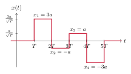
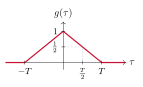
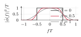
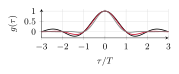

Topic 5. Modulation and demodulation
In this topic
Topic 4 showed that a transmitter is a set of coordinates on an orthonormal basis of waveforms, and that the receiver recovers the noisy coordinates by correlation. It did not say which waveforms to use, nor how fast the coordinates can follow one another. This topic builds the waveforms of real systems. A pulse and its shifts carry a stream of symbols, a cosine and a sine carry two coordinates on a carrier, and a filter followed by a sampler replaces the bank of correlators. The price of each choice is paid in time and in frequency, and the Fourier transform measures it. Sections 5.1 to 5.4 correspond to the first lecture and Sections 5.5 and 5.6 to the second.
We map bits to the symbols of a constellation, and we relate the symbol rate to the bit rate, the energy per symbol to the energy per bit, and both to the transmitted power.
We build pulse amplitude modulation from a pulse whose shifts are orthonormal, and we recover the real Gaussian channel of Topic 4, one use per symbol.
We compute every correlation with one matched filter and a sampler, and we see what intersymbol interference is when the sampling instants are wrong.
We place two coordinates on a cosine and a sine at a carrier frequency, obtain PSK and QAM, and recover the complex Gaussian channel of Topic 1 with noise variance \No.
We define the bandwidth of a signal with the Fourier transform, and we state the Nyquist criterion: a pulse of period T needs a baseband bandwidth of at least 1/(2T).
We measure the use of the spectrum by the spectral efficiency, and we place energy, bandwidth and error probability in one trade-off.
5.1 Symbols, rates and energies
A transmitter receives bits at a bit rate R_{\rm b}, in bits per second, and sends symbols at a symbol rate R_{\rm s}=1/T, in symbols per second, where T is the symbol period. The mapper takes the bits in groups of \log_2M and assigns to each group a point of a constellation \mathcal X of M points, with a fixed labeling. Without coding, every symbol carries \log_2M bits and \begin{equation*} R_{\rm b}=R_{\rm s}\log_2M.\tag{5.1} \end{equation*} With a binary code of rate r before the mapper, the coded bits arrive \log_2M per symbol but the information bits do not. By equation (3.30) of Topic 3, each symbol carries R=r\log_2M information bits, so R_{\rm b}=R\,R_{\rm s}. The labeling matters for bit errors, as Section 1.6 of Topic 1 showed: with a Gray labeling, in which neighboring points differ in one bit, the bit error probability is approximately P_{\rm e}/\log_2M. The approximation counts only the errors to a neighboring point, which dominate at the SNRs of interest.
The energy per symbol is \Es=\EE(|X|^2), as in Topic 1, and the energy per information bit is \Eb=\Es/R, which is \Es/\log_2M without coding. A symbol of energy \Es every T seconds gives the average power \begin{equation*} P=\frac{\Es}{T}=\Es R_{\rm s}=\Eb R_{\rm b},\tag{5.2} \end{equation*} where the last form, energy per bit times bits per second, does not depend on the constellation or the code. The constellations of this topic are in Figure 5.1 and Table 5.1. The M-PAM constellations are real, with points \pm a,\pm3a,\ldots,\pm(M-1)a and energy \Es=(M^2-1)a^2/3 by Exercise 1.2 of Topic 1. The M-PSK constellations are complex, with M points on a circle of radius \sqrt{\Es}, at angles 2\pi k/M. The square M-QAM constellations, with M=4^q, take the real and imaginary parts from the same \sqrt M-PAM, so their energy is twice that of the \sqrt M-PAM: 2a^2 for QPSK, which is 4-QAM, and 10a^2 for 16-QAM. The table also gives the squared minimum distance per unit of \Eb for uncoded transmission, the quantity that governed the comparisons of Topics 2 and 4. Each additional bit per dimension divides it by a factor of 2.5 to 2.8, about 4 dB. Section 5.6 says what is gained in exchange.
Figure 5.1. The constellations of Table 5.1. The spacing between neighbors is 2a in (a), (b) and (d).
| Constellation | M | \log_2M | Dimensions | \Es | d_{\min} | d_{\min}^2/\Eb |
|---|---|---|---|---|---|---|
| 2-PAM | 2 | 1 | 1 | a^2 | 2a | 4 |
| 4-PAM | 4 | 2 | 1 | 5a^2 | 2a | 1.6 |
| 8-PAM | 8 | 3 | 1 | 21a^2 | 2a | 0.57 |
| QPSK | 4 | 2 | 2 | 2a^2 | 2a | 4 |
| 8-PSK | 8 | 3 | 2 | \Es | 2\sqrt{\Es}\sin(\pi/8) | 1.76 |
| 16-QAM | 16 | 4 | 2 | 10a^2 | 2a | 1.6 |
| 64-QAM | 64 | 6 | 2 | 42a^2 | 2a | 0.57 |
Table 5.1. Energy and minimum distance of the usual constellations with equiprobable points, and squared minimum distance per unit of energy per bit for uncoded transmission.
Example 5.1.
A link carries R_{\rm b}=12 Mbit/s with 16-QAM. Without coding, by (5.1) the symbol rate is R_{\rm s}=12/4=3 Msymbols per second and T=\tfrac13\,\mus. With a code of rate r=\tfrac34, each symbol carries R=\tfrac34\cdot4=3 information bits, so R_{\rm s}=4 Msymbols per second and T=0.25\,\mus. The code costs one third more symbols per second, which Section 5.6 converts into bandwidth. Coordinates have the units of the square root of an energy, since the basis waveforms have unit energy, so if a^2=1 nJ, Table 5.1 gives \Es=10 nJ in both cases, the energy per information bit is \Eb=2.5 nJ without coding and \tfrac{10}3 nJ with it, and by (5.2) the power is P=30 mW without coding and 40 mW with it.
5.2 Pulse amplitude modulation
The simplest basis of Topic 4 was a pulse and its shifts. We now take this basis seriously, with pulses that may overlap. Since this topic is full of shifts and reversals of the pulse, we make the time variable explicit in the inner products of Topic 4 and write \langle\phi(t),\phi(t-\tau)\rangle instead of \langle\phi,\phi(\cdot-\tau)\rangle: the variable inside the brackets is the one integrated out, and when t is needed for another instant the integration variable is called u.
Definition 5.2.
A real signal \phi of unit energy is a Nyquist pulse for the symbol period T when its shifts by multiples of T are orthonormal, that is, when \begin{equation*} g(\tau)=\langle\phi(t),\phi(t-\tau)\rangle=\int_{-\infty}^{\infty}\phi(t)\,\phi(t-\tau)\drm t\tag{5.3} \end{equation*} satisfies g(0)=1 and g(kT)=0 for every integer k\neq0.
The function g compares the pulse with itself displaced by \tau, and the inner product of two shifts, \langle\phi(t-iT),\phi(t-kT)\rangle, equals g((k-i)T) because a common shift does not change an inner product, as seen in Section 4.1 of Topic 4. The condition therefore says exactly that \{\phi(t-iT)\} is an orthonormal set. Pulse amplitude modulation (PAM) sends the symbols x_1,\ldots,x_n of a real constellation as \begin{equation*} x(t)=\sum_{i=1}^n x_i\,\phi(t-iT),\tag{5.4} \end{equation*} one coordinate in each shift of the pulse, at the rate of one symbol every T seconds. Figure 5.2 shows a PAM signal. Everything that Topic 4 proved for an orthonormal basis applies at once. By Proposition 4.4 of Topic 4 the energy of the signal is \smash{\sum_{i=1}^n}x_i^2, with average n\Es, and the coordinate x_i is the correlation \langle x(t),\phi(t-iT)\rangle. In white Gaussian noise of spectral density \No/2, the correlator outputs are \begin{equation*} Y_i=\langle Y(t),\phi(t-iT)\rangle=x_i+Z_i, \qquad i=1,\ldots,n,\tag{5.5} \end{equation*} with independent Gaussian noise of variance \No/2 by Proposition 4.10, and nothing is lost by Theorem 4.12. This is the real Gaussian channel of Table 1.2 of Topic 1, with \sigma^2=\No/2 and \snr=2\Es/\No by equation (4.12) of Topic 4, used R_{\rm s}=1/T times per second. The detectors, decoders, error probabilities and mutual informations of Topics 1 to 3 apply without change, and the symbol rate converts their results from channel uses to seconds.
Example 5.3.
The rectangular pulse \phi(t)=\tfrac{1}{\sqrt T} for 0\leq t<T, and 0 otherwise, is a Nyquist pulse for the period T, since its shifts have disjoint supports. Its function g is the triangle of Figure 5.2, \begin{equation*} g(\tau)=\begin{cases}1-\dfrac{|\tau|}{T}&|\tau|\leq T\\[1ex]0&\text{otherwise},\end{cases}\tag{5.6} \end{equation*} because for 0\leq\tau\leq T the pulse and its shift overlap on an interval of length T-\tau, where their product is \tfrac1T. The triangle vanishes at every nonzero multiple of T, as required, and it also shows what happens between them: the pulse and its shift by half a period have inner product \tfrac12.


Figure 5.2. The 4-PAM signal (5.4) with the rectangular pulse of Example 5.3: the symbol x_i occupies [iT,(i+1)T). On the right, the function g of that pulse.
Example 5.4.
The pulse \begin{equation*} \phi(t)=\frac{1}{\sqrt T}\,\sinc\Bigl(\frac tT\Bigr), \qquad\sinc(u)=\frac{\sin(\pi u)}{\pi u},\tag{5.7} \end{equation*} with \sinc(0)=1, is also a Nyquist pulse for the period T. Its shifts overlap over the whole real line, as Figure 5.3 shows, and yet they are orthonormal, like \phi_1 and \phi_2 of Example 4.3 of Topic 4. Section 5.5 proves it and shows that g(\tau)=\sinc(\tau/T), which vanishes at every nonzero multiple of T. The pulse is not zero outside any finite interval, and the figure shows the reason for using it: the PAM signal passes through the value x_i/\sqrt T at t=iT, because all the other pulses vanish there, and it occupies a narrow band of frequencies. As the remark that closed Topic 4 says, the two pulses give the same coordinates, noise and error probabilities, and differ only in the resources they use: the first is confined in time and spread in frequency, the second the opposite.
Figure 5.3. The 4-PAM signal of Figure 5.2, now with the sinc pulse of Example 5.4, in units of a. The four scaled pulses (thin) overlap everywhere, and their sum (thick) equals each symbol at its own instant iT.
5.3 Matched filter and sampling
The receiver of Figure 4.4 of Topic 4 has one correlator per basis waveform, that is, one per symbol. For a PAM signal the basis waveforms are shifts of one pulse, and one filter computes all the correlations. The convolution of two signals is \begin{equation*} (y*h)(t)=\int_{-\infty}^{\infty}y(u)\,h(t-u)\drm u,\tag{5.8} \end{equation*} and a linear time-invariant filter with impulse response h produces y*h from its input y, as seen in the signals and systems course.
Proposition 5.5.
Let h(t)=\phi(-t) be the pulse reversed in time. For every signal y and every instant t, \begin{equation*} (y*h)(t)=\langle y(u),\phi(u-t)\rangle,\tag{5.9} \end{equation*} so the output of the filter h at the instant iT is the correlation \langle y(t),\phi(t-iT)\rangle with the i-th basis waveform.
In (5.8), h(t-u)=\phi(u-t), so (y*h)(t)=\int_{-\infty}^{\infty}y(u)\phi(u-t)\drm u, which is the inner product of y with the pulse shifted by t.
The filter h is the matched filter of the pulse, and Figure 5.4 shows the receiver: the received waveform enters the matched filter, a sampler reads the output at t=T,2T,\ldots,nT, and the samples Y_1,\ldots,Y_n of (5.5) go to the detector or decoder of Topics 1 and 2. The name is justified by the fact that, among all filters followed by a sampler, the matched filter gives the largest ratio of signal to noise in the sample.
Figure 5.4. The PAM receiver. The matched filter and the sampler compute the n correlations of Figure 4.4 of Topic 4.
The output of the filter between the sampling instants tells what the Nyquist condition protects us from. Without noise, the input is the PAM signal (5.4), and by (5.9), linearity and the definition (5.3), \begin{equation*} q(t)=\sum_{k=1}^n x_k\,\langle\phi(u-kT),\phi(u-t)\rangle=\sum_{k=1}^n x_k\,g(t-kT).\tag{5.10} \end{equation*} The filter output is a PAM signal with the pulse g in the place of \phi. At t=iT every term with k\neq i vanishes and q(iT)=x_i, which is (5.5) without noise. At an instant iT+\tau with 0<\tau<T, the sample is \begin{equation*} q(iT+\tau)=x_i\,g(\tau)+\sum_{k\neq i}x_k\,g\bigl((i-k)T+\tau\bigr),\tag{5.11} \end{equation*} a reduced copy of x_i plus a combination of the other symbols, called intersymbol interference. It is not noise: it is present without noise, it depends on the data, and it would vanish if the receiver sampled at the right instants. The pulse shape decides how much of it a timing error collects. The sinc pulse has g(\tau)=\sinc(\tau/T), whose values at \pm T+\tau,\pm2T+\tau,\ldots decrease like 1/k, and Section 5.5 introduces pulses whose g decays faster, at the price of some bandwidth.
Problem 5.6.
The 4-PAM sequence (x_1,x_2,x_3,x_4)=(3a,-a,a,-3a) of Figure 5.2 is sent with the rectangular pulse, and the receiver samples the matched filter at t=iT+\tfrac T3 instead of t=iT. Find the four samples and the decisions of the nearest-point detector, without noise.
Show solution
By (5.6), g(\tfrac T3)=\tfrac23 and g(-T+\tfrac T3)=g(-\tfrac{2T}3)=\tfrac13, while g vanishes at T+\tfrac T3 and beyond. In (5.11) only the symbol x_i and the next one, x_{i+1}, survive, so q(iT+\tfrac T3)=\tfrac23x_i+\tfrac13x_{i+1}, with x_5=0 after the last symbol. The four samples are \tfrac23\cdot3a-\tfrac13a=\tfrac53a, -\tfrac23a+\tfrac13a=-\tfrac13a, \tfrac23a-a=-\tfrac13a and -2a. The thresholds of 4-PAM are at 0 and \pm2a, by Problem 1.12 of Topic 1, so the decisions are a, -a and -a for the first three symbols, and the last sample lies exactly on the threshold between -a and -3a. A detector must fix a rule for ties, for instance the point of smaller energy, here -a, and we adopt it. The first, the third and the fourth symbols are then wrong before any noise is added. The noise in a sample taken at iT+\tau has the same variance \No/2 as at iT, since \phi(t-iT-\tau) has unit energy, so the timing error costs signal and gains nothing.
5.4 Passband transmission: PSK and QAM
A PAM signal built on a slowly varying pulse has its frequency content around f=0, and we call it a baseband signal. Radio channels, antennas and the regulations that share the spectrum require the signal to occupy a band around a carrier frequency f_{\rm c}, typically far above 1/T. Such a signal is a passband signal, and the way to build it is to multiply a baseband pulse by a cosine. A sine at the same frequency gives a second pulse, orthogonal to the first, and the two together carry two coordinates per symbol period. Let \psi be a real Nyquist pulse for the period T. The in-phase and quadrature waveforms of the i-th symbol period are \begin{equation*} \phi_{{\rm I},i}(t)=\sqrt2\,\psi(t-iT)\cos(2\pi f_{\rm c}t) \qquad\text{and}\qquad \phi_{{\rm Q},i}(t)=-\sqrt2\,\psi(t-iT)\sin(2\pi f_{\rm c}t).\tag{5.12} \end{equation*} The pulse moves from period to period and the carrier does not: its phase is counted from the common origin t=0 in every period, so the whole signal rides on one cosine and one sine, and the receiver will multiply by that same cosine and sine.
Let \psi be the rectangular pulse of Example 5.3 and let f_{\rm c}T be a positive integer. Then the waveforms \phi_{{\rm I},i} and \phi_{{\rm Q},k} form an orthonormal set for all integers i and k; the proof, a direct computation with the double-angle formulas, is left to the reader. The same orthonormality holds for any real Nyquist pulse \psi(t) whose baseband bandwidth W satisfies W<f_{\rm c}. In this case, the condition that f_{\rm c}T be an integer is not needed.
Quadrature amplitude modulation (QAM) sends the complex symbols x_i=a_i+jb_i of a constellation \mathcal X\subset\CC by placing their real parts on the in-phase waveforms and their imaginary parts on the quadrature waveforms, \begin{equation*} x(t)=\sum_{i=1}^n\bigl(a_i\,\phi_{{\rm I},i}(t)+b_i\,\phi_{{\rm Q},i}(t)\bigr).\tag{5.13} \end{equation*} This is a transmitter of Section 4.3 of Topic 4 with a basis of 2n real waveforms, and the coordinate vector (a_1,b_1,\ldots,a_n,b_n). The complex number x_i is a convenient name for the pair (a_i,b_i), and no complex waveform is transmitted. Its modulus and argument have a direct meaning. Writing x_i=|x_i|e^{j\theta_i} and using (5.12) with \cos(u+\theta)=\cos u\cos\theta-\sin u\sin\theta, the i-th term of (5.13) is \begin{equation*} a_i\,\phi_{{\rm I},i}(t)+b_i\,\phi_{{\rm Q},i}(t)=\sqrt2\,|x_i|\,\psi(t-iT)\cos\bigl(2\pi f_{\rm c}t+\theta_i\bigr),\tag{5.14} \end{equation*} a piece of carrier whose amplitude is set by |x_i| and whose phase is set by \theta_i. The symbol modulates the amplitude and the phase of the carrier at once, which gives the method its name. Phase shift keying (PSK) is the special case of a constellation on a circle: the amplitude is constant and only the phase carries information. With the rectangular pulse, a QPSK signal is a carrier of constant amplitude \sqrt{2\Es/T} whose phase jumps among \pm\tfrac\pi4 and \pm\tfrac{3\pi}4 at the multiples of T. By Proposition 4.4 of Topic 4, the energy of the signal is \smash{\sum_{i=1}^n}(a_i^2+b_i^2)=\smash{\sum_{i=1}^n}|x_i|^2, so |x_i|^2 is the energy of the symbol, in agreement with the definition \Es=\EE(|X|^2) of Topic 1 for complex constellations.
Since the waveforms are orthonormal, everything of Topic 4 applies again. The receiver correlates Y(t) with \phi_{{\rm I},i}(t) and \phi_{{\rm Q},i}(t), which Exercise 5.6 shows is done by multiplying by the carrier, filtering with \psi(-t) and sampling at t=iT, and obtains \begin{equation*} Y_i=x_i+Z_i, \qquad i=1,\ldots,n,\tag{5.15} \end{equation*} as in (5.5), but now with complex numbers: the real and imaginary parts of Z_i are independent Gaussian noises of variance \No/2 each, so the complex noise Z_i has variance \No. This is the complex Gaussian channel of Table 1.2 of Topic 1 with \sigma^2=\No and \snr=\Es/\No, used once per symbol period.
Example 5.7.
With QPSK, \Es=2a^2 and the nearest-point detector of Proposition 1.5 of Topic 1 decides each coordinate from its sign. Each coordinate is 2-PAM with amplitude a in noise of variance \No/2, so by equation (1.23) of Topic 1 it is wrong with probability p=\tfrac12\erfc\bigl(a/\sqrt{\No}\bigr), and by Problem 1.13 and Exercise 1.5 of Topic 1 the symbol error probability is 2p-p^2 and the bit error probability with Gray labels is exactly p. Since each symbol carries two bits, \Eb=a^2 and \begin{equation*} P_{\rm b}=\tfrac12\erfc\biggl(\sqrt{\frac{\Eb}{\No}}\biggr),\tag{5.16} \end{equation*} the same as antipodal signaling in Example 4.14 of Topic 4. The quadrature pulse carries a second bit at no cost in energy per bit, as the four corners of Problem 4.15 of Topic 4 did.
5.5 Bandwidth and the Nyquist criterion
Everything so far was measured in time. The second resource of a waveform is the band of frequencies it occupies, and the tool to measure it is the Fourier transform of the signals and systems course.
Definition 5.8.
The Fourier transform of a signal x is \begin{equation*} \hat x(f)=\int_{-\infty}^{\infty}x(t)\,e^{-j2\pi ft}\drm t,\tag{5.17} \end{equation*} a complex function of the frequency f, in hertz, and x(t)=\int_{-\infty}^{\infty}\hat x(f)e^{j2\pi ft}\drm f recovers the signal.
Table 5.2 lists the properties we use: shifting, filtering and multiplying by a carrier act simply on \hat x, and Parseval’s identity computes inner products and energies in either domain, so |\hat x(f)|^2 is the density of the energy of x in frequency. The first pair at the end is computed in Example 5.9; the second is its dual, with time and frequency exchanged.
| Property | Signal | Transform |
|---|---|---|
| Shift | x(t-\tau) | e^{-j2\pi f\tau}\,\hat x(f) |
| Convolution | (x*h)(t) | \hat x(f)\,\hat h(f) |
| Modulation | x(t)\cos(2\pi f_{\rm c}t) | \tfrac12\hat x(f-f_{\rm c})+\tfrac12\hat x(f+f_{\rm c}) |
| Parseval | \langle x(t),y(t)\rangle | \int_{-\infty}^{\infty}\hat x(f)\,\hat y(f)^*\drm f |
| Real signal | x(t) real | \hat x(-f)=\hat x(f)^* |
| Reversal | x(-t), x real | \hat x(f)^* |
| Rectangular pulse | \tfrac{1}{\sqrt T} on [-\tfrac T2,\tfrac T2) | \sqrt T\,\sinc(fT) |
| Sinc pulse | \tfrac{1}{\sqrt T}\sinc(t/T) | \sqrt T on [-\tfrac{1}{2T},\tfrac{1}{2T}) |
Table 5.2. Properties of the Fourier transform and the two transform pairs of this topic. The asterisk denotes the complex conjugate.
Example 5.9.
For the rectangular pulse of unit energy centered at the origin, x(t)=\tfrac{1}{\sqrt T} for -\tfrac T2\leq t<\tfrac T2, the integral (5.17) is, for f\neq0, \begin{equation*} \hat x(f)=\frac{1}{\sqrt T}\int_{-T/2}^{T/2}e^{-j2\pi ft}\drm t=\frac{1}{\sqrt T}\,\frac{e^{-j\pi fT}-e^{j\pi fT}}{-j2\pi f}=\frac{1}{\sqrt T}\,\frac{\sin(\pi fT)}{\pi f}=\sqrt T\,\sinc(fT),\tag{5.18} \end{equation*} and \hat x(0)=\sqrt T is the integral of the pulse, which agrees with \sinc(0)=1. The energy density |\hat x(f)|^2=T\sinc^2(fT) decays like 1/f^2. The spectrum extends to arbitrarily high frequencies, despite its zeros at nonzero integer multiples of 1/T, with about 90\% of the energy in |f|<1/T and 95\% in |f|<2/T. The pulse of Example 5.3 is this one shifted by \tfrac T2. A time shift multiplies the Fourier transform by a phase factor, leaving its magnitude and energy density unchanged.
Definition 5.10.
A baseband signal x has bandwidth W when \hat x(f)=0 for |f|>W and W is the smallest such number. A passband signal whose transform vanishes outside f_{\rm c}-W\leq|f|\leq f_{\rm c}+W has passband bandwidth 2W.
For a real signal the negative frequencies repeat the positive ones, by the fifth line of Table 5.2, so the bandwidth is the extent of the positive frequencies. By the modulation property, the passband pulses (5.12) built on a pulse \psi of bandwidth W occupy f_{\rm c}-W\leq|f|\leq f_{\rm c}+W, a passband bandwidth of 2W, and by linearity and the shift property every PAM or QAM signal has the bandwidth of its pulse. The sinc pulse has bandwidth 1/(2T) and the rectangular pulse has no finite bandwidth; the theorem below says how small the bandwidth of a Nyquist pulse can be. It rests on one identity: by Parseval’s identity and the shift property, the function (5.3) is \begin{equation*} g(\tau)=\int_{-\infty}^{\infty}\hat\phi(f)\,\bigl(e^{-j2\pi f\tau}\hat\phi(f)\bigr)^*\drm f=\int_{-\infty}^{\infty}|\hat\phi(f)|^2\,e^{j2\pi f\tau}\drm f,\tag{5.19} \end{equation*} the inverse Fourier transform of the energy density of the pulse.
Theorem 5.11.
[Nyquist criterion]
A real pulse \phi of unit energy is a Nyquist pulse for the period T if and only if \begin{equation*} \sum_{k=-\infty}^{\infty}\Bigl|\hat\phi\Bigl(f-\frac kT\Bigr)\Bigr|^2=T \qquad\text{for almost every }f.\tag{5.20} \end{equation*} Consequently, a Nyquist pulse for the period T has bandwidth at least 1/(2T), and a Nyquist pulse with bandwidth exactly 1/(2T) has the energy density of the sinc pulse (5.7), |\hat\phi(f)|^2=T for almost every f with |f|<1/(2T).
Values at isolated spectral endpoints do not affect the pulse energy or the orthogonality of its shifts. The theorem follows from (5.19): the samples g(kT) are the Fourier series coefficients of the periodic function in (5.20), and all but g(0) vanish exactly when it is constant. For the sinc pulse, |\hat\phi(f)|^2 is the rectangle of height T on |f|<1/(2T), whose shifted copies tile the frequency axis, and g, its inverse transform by (5.19), is \sinc(\tau/T), as Example 5.4 claimed. Conversely, the rectangular pulse is a Nyquist pulse by Example 5.3, so the shifted copies of \sinc^2(fT) add up to 1 at every frequency, which is not obvious from the formula.
The theorem is a statement about resources. A baseband waveform of bandwidth W can carry a Nyquist pulse of period T only if W\geq1/(2T), that is, \begin{equation*} R_{\rm s}=\frac1T\leq2W\tag{5.21} \end{equation*} symbols per second, with equality for the sinc pulse. In passband, where the bandwidth is 2W by Definition 5.10, the same pulse carries R_{\rm s}\leq2W complex symbols per second, with two real coordinates each. In both cases a hertz of bandwidth buys two real dimensions per second, the count that Topic 6 uses. The sinc pulse attains the limit, but its slow decay makes it fragile to timing errors, and practical systems spend some excess bandwidth on pulses that decay faster.
Example 5.12.
The raised-cosine family with roll-off \beta\in[0,1] is defined by the energy density \begin{equation*} |\hat\phi(f)|^2=\begin{cases} T & |f|\leq\dfrac{1-\beta}{2T}\\[1.2ex] \dfrac T2\Bigl(1+\cos\Bigl(\dfrac{\pi T}{\beta}\Bigl(|f|-\dfrac{1-\beta}{2T}\Bigr)\Bigr)\Bigr) & \dfrac{1-\beta}{2T}<|f|<\dfrac{1+\beta}{2T}\\[1.2ex] 0 & \text{otherwise}, \end{cases}\tag{5.22} \end{equation*} shown in Figure 5.5. The bandwidth is W=(1+\beta)/(2T), so the excess over the minimum 1/(2T) is the fraction \beta. For \beta=0 this is the sinc pulse, and for \beta=1 the bandwidth is doubled. The pulse satisfies (5.20) because the copies k=0 and k=1 overlap on the transition band around f=1/(2T) with opposite cosines, as Exercise 5.5 checks for \beta=1. The function g is the inverse transform of (5.22), \begin{equation*} g(\tau)=\sinc\Bigl(\frac\tau T\Bigr)\,\frac{\cos(\pi\beta\tau/T)}{1-(2\beta\tau/T)^2},\tag{5.23} \end{equation*} which decays like 1/\tau^3 for \beta>0, and the pulse \phi itself, whose transform is the square root of (5.22), is called the root raised-cosine pulse. With \beta=1 and the timing error of Problem 5.6, the interference coefficients g(-\tfrac{2T}3)=0.27 and g(\tfrac{4T}3)=-0.02 replace the 0.41 and -0.21 of the sinc pulse.


Figure 5.5. The raised-cosine family of Example 5.12 for \beta=0, 0.5 and 1: energy density in frequency (left) and the function g (right). All three vanish at the nonzero multiples of T, and the larger \beta, the faster g decays and the wider the band.
5.6 Spectral efficiency and the three resources
We can now count what a transmission costs in bandwidth. The spectral efficiency of a system is \begin{equation*} \eta=\frac{R_{\rm b}}{W_{\rm total}}\tag{5.24} \end{equation*} bits per second per hertz, where W_{\rm total} is the bandwidth it occupies, baseband or passband. With a raised-cosine pulse of roll-off \beta and R information bits per symbol, baseband PAM has W_{\rm total}=(1+\beta)R_{\rm s}/2 and passband QAM has W_{\rm total}=(1+\beta)R_{\rm s}, so \begin{equation*} \eta_{\rm PAM}=\frac{2R}{1+\beta} \qquad\text{and}\qquad \eta_{\rm QAM}=\frac{R}{1+\beta},\tag{5.25} \end{equation*} with R=\log_2M without coding. The factor 2 is not an advantage of baseband: both systems use the same 2W_{\rm total}/(1+\beta) real dimensions per second, out of the limit 2W_{\rm total} of (5.21), and 16-QAM against 4-PAM, at equal bandwidth, have the same \eta and the same d_{\min}^2/\Eb in Table 5.1.
The trade-off concerns energy per bit \Eb (power P=\Eb R_{\rm b}), bandwidth (through \eta), and reliability (P_{\rm b}). Table 5.3 places the constellations of this topic in this trade-off for uncoded transmission with Gray labels, with P_{\rm b} from Problem 1.12 and Exercise 1.2 of Topic 1 applied to each real coordinate, as in Example 5.7. Each step from M to 4M points in QAM, one more bit per real dimension, adds 2/(1+\beta) bits per second per hertz, 2 for the sinc pulse of the table, and costs about 4 dB of energy per bit at the same bit error probability: energy and bandwidth are traded against each other, and the bit error probability sets the exchange rate. Coding enters the same trade-off: R=r\log_2M reduces \eta by the factor r, and a good code reduces the \Eb/\No required for the same P_{\rm b}, by at most what Theorem 3.14 of Topic 3 allows, which Topic 6 writes in these units. Exercise 5.7 works one case.
| Constellation | \eta with \beta=0 | P_{\rm b} with Gray labels | \Eb/\No for P_{\rm b}=10^{-3} | \Eb/\No for P_{\rm b}=10^{-5} |
|---|---|---|---|---|
| QPSK | 2 | \tfrac12\erfc\bigl(\sqrt{\Eb/\No}\bigr) | 6.8 dB | 9.6 dB |
| 16-QAM | 4 | \tfrac38\erfc\bigl(\sqrt{2\Eb/(5\No)}\bigr) | 10.5 dB | 13.4 dB |
| 64-QAM | 6 | \tfrac7{24}\erfc\bigl(\sqrt{\Eb/(7\No)}\bigr) | 14.8 dB | 17.8 dB |
Table 5.3. Spectral efficiency of uncoded passband QAM with the sinc pulse, bit error probability with Gray labels and nearest-point detection, where only errors to a neighboring point are counted for 16-QAM and 64-QAM, and the energy per bit needed for two targets. Baseband 2-PAM, 4-PAM and 8-PAM have the same three last columns.
Wireless local area networks and digital television adapt the constellation to the link SNR (Table 5.3). They also transmit QAM symbols on parallel, orthogonal subcarriers spaced 1/T apart and lasting T seconds, despite overlapping spectra. This is orthogonal frequency division multiplexing (OFDM), Topic 4 applied in frequency.
What to remember
A symbol every T seconds carries R=r\log_2M information bits, so R_{\rm b}=R\,R_{\rm s}, \Eb=\Es/R and P=\Es R_{\rm s}=\Eb R_{\rm b}.
PAM sends x(t)=\sum_ix_i\phi(t-iT) with a Nyquist pulse, one whose shifts by T are orthonormal, that is, g(0)=1 and g(kT)=0 for k\neq0. The receiver is the matched filter \phi(-t) sampled at iT, and it sees the real Gaussian channel with \sigma^2=\No/2, R_{\rm s} times per second. Sampling at the wrong instants adds intersymbol interference, \sum_{k\neq i}x_kg((i-k)T+\tau).
QAM places \re x_i on \sqrt2\psi(t-iT)\cos(2\pi f_{\rm c}t) and \im x_i on -\sqrt2\psi(t-iT)\sin(2\pi f_{\rm c}t). The symbol sets the amplitude and the phase of the carrier, PSK uses the phase alone, and the receiver sees the complex Gaussian channel with \sigma^2=\No and \snr=\Es/\No.
The bandwidth of a baseband signal is the extent of its positive frequencies, and a passband signal built on a pulse of bandwidth W occupies 2W around f_{\rm c}. The Nyquist criterion, \sum_k|\hat\phi(f-k/T)|^2=T, forces W\geq1/(2T), so R_{\rm s}\leq2W symbols per second: a hertz buys two real dimensions per second. The sinc pulse attains the limit and the raised-cosine family trades excess bandwidth \beta for a faster decay in time.
With \eta=R_{\rm b}/W_{\rm total}, baseband PAM gives \eta=2R/(1+\beta) and passband QAM gives \eta=R/(1+\beta). Changing QAM from M to 4M adds 2/(1+\beta) bits/s/Hz, costing about 4 dB of \Eb/\No at fixed P_{\rm b}.